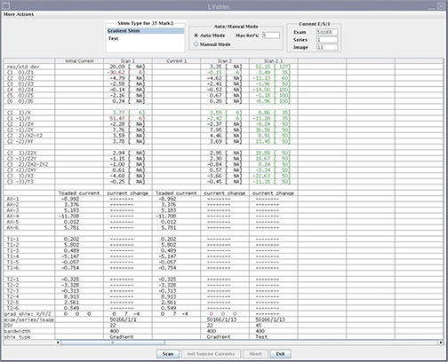

Start the LVShim tool and run Gradshim in Auto mode.
About this task
In Auto mode, gradient currents are automatically calculated after you click Scan to fine-tune the homogeneity of the magnet. In this mode, the tool stops after the X, Y, and Z harmonics are within specification. In test mode, the image from the last scan is automatically reanalyzed.
Note: For software version 29.0 and later, gradwarp is no longer applied to images. LVShim images may look more elliptical.
Procedure
Start the LVShim tool:
(For non-proprietary mode) From the Common Service Desktop, select Calibration > LVShim, and then select Click here to start this tool.
By default, Gradshim is performed in Auto mode, though Manual mode is also available.
Select Gradient Shim and click Scan.
Figure 1. Gradient shim - Auto mode

Note: The gradient shim bit resolution was increased by 16 times. This will result in gradient current values that are much higher than those observed in previous versions of this tool.
Result
In Auto mode, the tool does the following:
Sets up the protocol and collects image data
Calculates linear harmonics and compares it with the specification
Calculates the delta currents and the new currents based on the harmonics (dc offsets for X, Y, and Z)
Completes multiple iterations (maximum = five) until harmonics meets the specification
Shows the reanalysis of the last iteration in the final column in test mode (customer acceptance specification)
Finalization
To finalize this procedure, remove any phantoms and/or tools used.
Do a Check Scan before turning the unit over to the customer. See Doing a check scan.